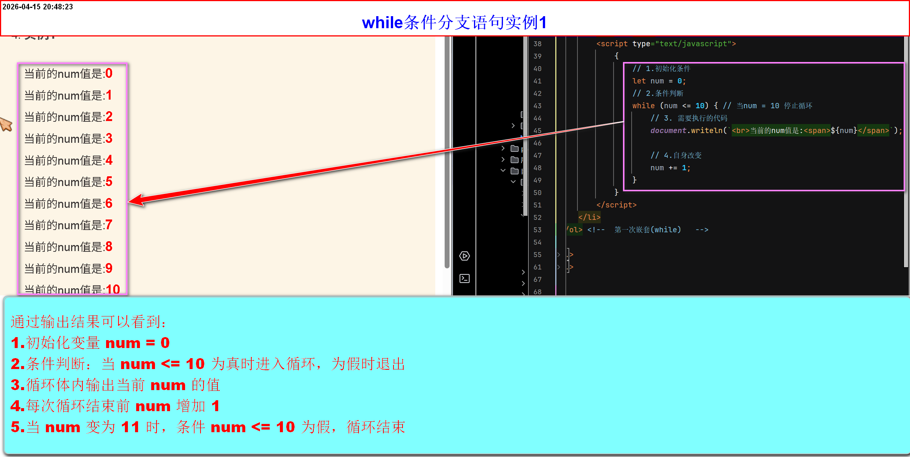

循环分支语句
循环结构
- 循环结构:根据某些给出的条件，重复的执行同一段代码
-
注意：循环必须要有某些固定的内容组成
-
初始化
- 初始化不是语法关键词(不是强制要求的)
- 而是循环逻辑中"从哪里开始"的一个变量准备
- 它可以是任何数据类型(字符串、数字、布尔值等)
- 但是通常会选择与条件判断和自身改变相匹配的类型，并且最常见的是数字
-
条件判断
- 是个表达式
- 当表达式为false，则退出循环
- 如果不设置条件判断，会报错(强制要求)
- 设置的表达式需要确定一个false情况，不然会一直循环下去
-
要执行的代码
- 就是while条件分支内【需要重复执行的代码】
-
自身改变
- 具体与初始化变量名一致，与条件判断挂挂钩
- 必须在while条件分支语句内
- 它通常会随着循环而变化，当它变化到一定状态(条件判断值为false)，退出循环
- 最常见使用方式：计算循环次数，当次数累计到条件判断临界点(条件判断值为false),退出循环
-
总结
- 初始化不是语法关键词，而是循环前的变量声明
- 数据类型灵活，但是必须与条件和改变逻辑(自身改变)兼容
- 初始化与条件判断挂钩，而改变逻辑与初始化挂钩(与初始化的变量名一致)
-
- 循环结构共有三种:while、do-while、for
-
while
- while，中文的意思是：当....时，其实就是当条件满足时就执行代码，一旦不满足了就不执行了
- 语法:
while(条件){满足条件执行} - 因为满足条件就执行，所以写的时候一定要注意，设定一个边界值，不然就会一直循环下去
-
实例1

通过设置断点，查看循环过程 -
while分支语句案例
-
求1~100 所有数字的和
-
求1~100 所有偶数或奇数的和
-
求一个数的阶层
·什么是阶层：就是
n! = 1 × 2 × 3 × ... × n例如： 3的阶层 = 1*2*3 4的阶层： 1*2*3*4 ......请输入数字
-
-
do-while
- 是一个和while循环类似的循环
- while会先进行条件判断，满足就执行，不满足直接就不执行
- 但是do-while循环是：先不管条件，先执行一回，然后在开始进行条件判断
- 语法：
do{要执行的代码} while (条件) -
do-while案例
-
案例1(求1~100之间的数求和)
-
案例2(求1~100之间奇数或偶数求和)
-
案例3(求一个数的阶层)
请输入一个数据
-
-
for
- 和while和do-while循环不一样
- 初始化，条件判断，自身改变写在一起【中间英文分号隔开(按顺序从左到右)】
- 语法：
for(初始化,条件判断,自身改变){要执行的代码} -
for案例
-
for案例1(求1~100之间的偶数或奇数求和)
-
案例2(打印直角三角形)
请输入数字
-
补充知识
-
浏览器设置断点
- 断点的意思是:当浏览器执行到断点区域，会暂停[也就是后续代码不会再被执行]
- 注意：除了
script标签及引用js的文件，其他标签不会被断点。 -
使用浏览器的开发者工具设置断点
- 打开开发者工具
- 单击Sources(源代码/来源)
- 在需要设置断点的代码，改行(单击行数即可)
-
-
重新运行代码
-
在当前开发者工具：单击[继续执行脚本按钮]、快捷键:[
F8/ctrl+\] - 关闭开发者工具会停止调试，不推荐
-
在当前开发者工具：单击[继续执行脚本按钮]、快捷键:[
-
单步执行
- 单击【进入下一个函数调用】按钮（Step into），或按 F11 / Ctrl+;，每按一次执行一行代码，如果遇到函数调用会进入函数内部。
- 如果不想进入函数内部，可以单击【跳过函数调用】按钮（Step over），或按 F10
-
视频
-